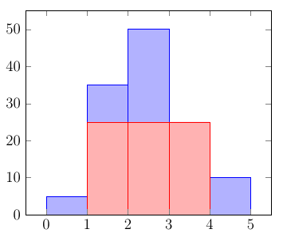
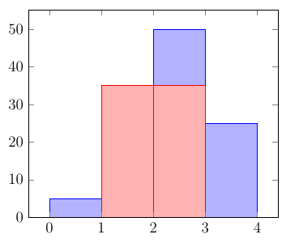
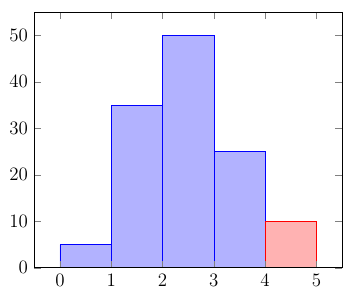

Largest rectangle in a histogram
In this algorithm, we will look for the largest rectangle that is hidden within a histogram.
We will use following histogram as an example to describe steps of the algorithm.

We will look for the marked area, whose size is \(3*1*25\) (3 bars, each of width 1, for sake of simplicity, and heigth 25) and is the largest rectangle we will be able to find. There are two algorithms that can do that, here the most efficient one with complexity \(O(n)\) will be shown. It is so called stack approach.
Let's dive into this algorithm. Complexity given suggests that we take each bar only once. To achieve that, we will use stack. We will index each bar starting from 1.
Step 1 - define empty stack, we'll call it simply \(Stack\). Its idea is that element, which is put there as last one, is also taken as first one.
Step 2 - for each bar we do following:
- If stack is empty or bar, which we visit, is higher than bar on the top of stack, we push visited bar (to be precise its index) to the stack and increase index by 1.
This applies to first three bars:
- Stack is empty, so we put first bar to the stack, \(Stack = [1]\)
- Bar 2 is higer than bar 1, so we add it to the stack, \(Stack = [1,2]\)
- Similarly as above, we add another bar to stack, \(Stack = [1,2,3]\)
- If bar is smaller than the top of the stack, then keep removing the top of the stack, while top of the stack is greater than current bar. Calculate area of rectangle with taken bar as smallest bar.
Let us see, what that means.
- Height of 4th bar is 25. We compare it with bar at the top of the stack, 3rd bar, which is higher. So, we remove it from the stack, \(Stack = [1,2]\).
- Now, we take height of this removed bar, \(h = 50\)
- We take index of current bar, so \(i = 4\).
- We calculate multiplier, by subtracting index of bar on the top of the stack plus one from current index, \(mult = i - (\)TopOfStack \(+ 1) = 4 - (2+1) = 1\)
- We calculate new area by multiplying taken height by multiplier received, \(area = h * mult = 50 * 1 = 50\)
Now, at the top of the stack, we have index = 2. This bar is still higher than our current bar (4th), therefore we repeat this calculation:
- \(h = 35, Stack = [1]\)
- \(i = 4\)
- \(mult = i - (\)TopOfStack \(+ 1) = 4 - (1+1) = 2\)
- \(area = h * mult = 35 * 2 = 70\)
- This new area is bigger than area from previous step, therefore we store it as our answer for now.
Here, we need to explain where this calculation comes from. So, first of all, we perform this calculation here, because we reached bar, which is smaller then its predecessor. Indeed, we had \(Stack = [1,2,3]\), so bars which are bigger and bigger. And now, we are using these previous bars to check, what was the biggest rectangle, we could find among them.
Then, we perform these calculation only for bars, that are higher than current bar, because this way we will look for rectangle that does not include currently visited bar, so be higher and possibly larger.
In this situation, we can see that at first we take previous bar as single one, hence we get result 50, which is exactly height of this bar. Then, in second step we consider two previous bigger bars, which together have rectangle of size \(2*35 = 70\), as marked in figure below.

Ok, but what about this multiplier? This is value that determines, how many bars we use. In first iteration we took only bar 3, with heigth 50.
So, bar 4 is our strict upper bound. Bar 2, the one on the top of the stack, is strict lower bound. It means that we take number of bars between bar 2 and bar 4. So, we subtract these indexes, 4 - 2, but this is not enough. We are looking for answer to question, how many bars we have between bars 2 and 4 but excluding them. In other words, we are looking for a width of range, where boundaries are not part of this range. Hence, this "plus one" in substraction.
One could say, why to do such a complication in algorithm, while it is easier to simply take index of lately taken bar from stack? We will see later that this is not always the situation.
In second iteration we take two bars, so we have \(4-1\) and "plus one", which gives us 2 as an answer. Here it is also clear what sentence "calculate area with taken bar as smallest bar" means. We have two bars, 2 and 3. Taken bar is 2 and it is the smallest one among all these bars, so this will be maximum height of calculated rectangle.
After two iterations we are in the situation, where currently examined bar is bigger than bar left on the stack. Therefore, we apply first condition of this step, namely add it to the stack.
Let us go forward, now we take bar 5 and have \(Stack = [1,4]\).

This bar is again smaller then last bar from the stack, bar 4.
We apply therefore second condition from Step 2 and perform calculation:
- Height of bar 4, taken from top of the stack, is \(h = 25\) and \(Stack = [1]\)
- Index of examined bar is \(i = 5\)
- Multiplier will be number of bars to be taken, so all bars between bar 1 and bar 5, \(mult = 5 - (\)TopOfStack \(+ 1) = 5 - (1 + 1) = 3\) Now we see, why calculation of multiplier has to be done this way
- Finally we calculate area, \(area = h * mult = 25 * 3 = 75\), which now becomes our maximum area
As we are left with one bar in stack, \(Stack = [1]\), which is smaller than currently examined bar, we add new bar to the stack, \(Stack = [1,5]\). Important is that even though we do not have any bars left, we still need to increase index by 1 - this value will be needed in final step.
Step 3 - now, as we got to the last bar and still have some bars in stack, we need to perform final step. This is performing calculation for bars that still remain on the stack.
We take bar 5 and know two things. First one is that this bar is higher than bar 1 - another bar left on stack. Second is, that rectangle cannot be higher than this bar.
Therefore we will apply same steps as in second part of second step:
- \(h = 10, Stack = [1]\)
- \(i = 6\), as it was increased in last part of step 2. Thanks to that we can be sure that 5th bar will also be taken into calculation
- \(mult = i - (\)TopOfStack \(+ 1) = 6 - 2 = 4\)
- Finally, \(area = h * mult = 10 * 4 = 40\). As it is smaller then our maximum area we got till now, we discard this value.
Similar calculation we perform once again, with only one bar left on the stack. Here, we need to remember about one exception. When calculating multiplier, we do not have lower bound, but only upper one, in this case 1. Hence, this is the value we take, as we consider all bars up to examined bar. We could understand it as \(mult = i - 0 = 1 - 0 = 1\).
Of course, in our example we take only this single bar and its area, 5, will be our result. Again, we discard it, as it is smaller than our best result, which is 75.
As given at the beginning, 75 is answer in our example.